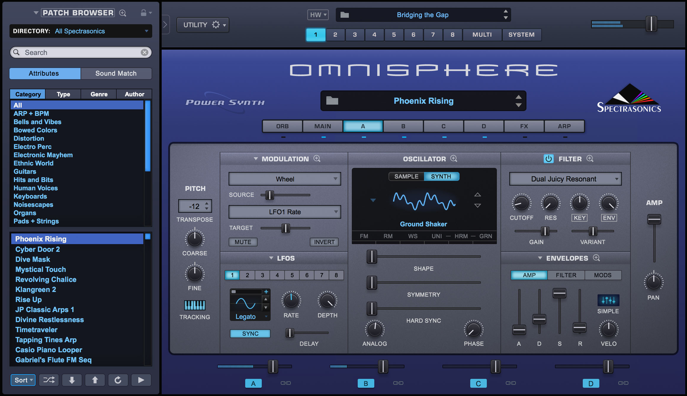

La composition dans une musique est une étapes cruciales dans une musique, car c'est a ce moment qu'on va décider le thème de notre chanson.
Avec la MAO on peut faire n'importe quel genre musical, que sa soit une instrumental pop, rap, electro, etc...
La composition débute par trouver la mélodie de notre chanson, en MAO les instrument sont remplacer par des plugins qui font office d'instrument, ces plugins sont trouvable sur different site web, plugins qui sont payant et qu'il faut acheter bien sur (non).
En moyenne les plugins coûte 50 euros ( cela depend de ce qu'on veut ).
Exemple de plugin que j'ai acheter (non).
Après la mélodie il faut integrer ce qu'on appelle les "drums", les drums sont par exemple : la basse, la "batterie", les cymbals, le kick, etc...
Les Drums apporte de l'energie a notre instrumentale.